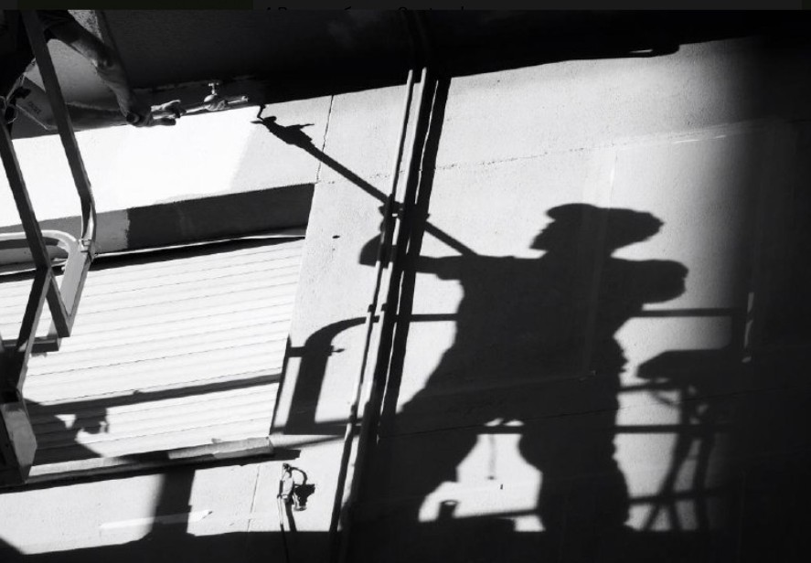

Знаете, что такое Мурал?
А Parees Fest (от «parees» — «стены» на астурийском) — это фестиваль мурализма,
который проходит в Овьедо с 2017 года. Он объединяет художников и жителей, чтобы преобразить город через искусство его стен.
Астурия очень гордится своими уроженцами. Один из них - художник Bastián Prendes. 
Его творчество — это синтез граффити, комикса и иллюстрации на масштабных поверхностях. Он затрагивает темы природы и чувств, духовности и эмоций, социальных явлений и силы воли.
Вам же надо сделать фото на фоне его мурала. Он как раз находится в Овьедо и создан в рамках фестиваля уличного искусства Parees Fest в 2018 году.